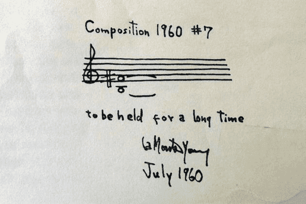

In the previous two chapters, we have seen two trends in 20th-century music manifest: the highly chromatic new language vs. an extension of post-Romantic tendencies
Now, we will discuss other directions that composers chose to explore:
Explorations of Texture, Timbre, and Tuning
Indeterminacy
Minimalism
Electronic and Computer Music
Explorations of Texture, Timbre, and Tuning
Explorations of Texture, Timbre, and Tuning
Composers began to increasingly focus on texture in post-tonal music.
This caused changes in the performance demands placed on players and also in the structure and size of ensembles.
A renewed focus on smaller, chamber ensembles develops.
This allows for more experimentation, and exploration of new techniques.
Aeolian Harp by Henry Cowell (1897-1965)
Cowell calls for the pianist to silently depress the keys of the keyboard and then strum and pluck the strings in a manner inspired by the wind harp to which the title refers.
Sonatas and Interludes by Piano John Cage (1912-1992)
prepared piano - placement of various objects and/or materials (such as screws, bolts made of metal or rubber, plastic, felt, and coins) on the strings of the piano at precisely specified locations.
Makrokosmos by George Crumb (1929-)
In the 1970s, George Crumb continued the tradition of coloristic exploration of the piano using extended instrumental techniques.
In Makrokosmos, Volume I (1972) for amplified piano, Crumb attempts to achieve a synthesis of conventional (keyboard) and unconventional (inside the piano) techniques.
Crumb’s style of notation is highly personal and, at times, even picturesque in support of his extramusical ideas.
Makrokosmos by George Crumb
Threnody to the Victims of Hiroshima by Krzysztof Penderecki (1933-)
This work represents a striking departure from the conventional use of texture and sonority.
The subtle alternation of blocks of sound, clusters, and quasi-imitative polyphonic strands create its form.
The orchestra is divided into 52 individual parts, calling for a diverse palette of extended string techniques including sul ponticello, sul tasto, col legno, col legno battuto, playing behind the bridge and playing the highest note possible
Threnody to the Victims of Hiroshima by Krzysztof Penderecki (1933-)
There are microtonal pitch inflections based on the quarter tone, an interval that divides the octave into 24 equal parts.
This score is an example of graphic notation, a notational style that uses nontraditional symbols to represent musical information.
Threnody to the Victims of Hiroshima by Krzysztof Penderecki (1933-)
Indeterminacy
Indeterminacy
Indeterminacy or aleatory - music in which elements of a composition have intentionally been left undetermined by the composer.
The application of aleatory to music composition may manifest itself in one of two ways:
the compositional process itself may be indeterminate in one way or another
the overall plan of the piece may be precisely notated, with specific details left either to the performer or to chance
Music of Changes (1951) by John Cage
John Cage was one of the best-known and earliest advocates of aleatory as a valid approach to music composition and performance/
In Music of Changes for solo piano, Cage used chance procedures derived from the I Ching, the ancient Chinese Book of Changes, to determine the work’s pitches, durations, dynamics, and so forth, which were then notated in a conventional “fixed” score.
Music of Changes (1951) by John Cage
Imaginary Landscape No. 4 (1951) by John Cage
This work is for 12 radios. The score precisely notates how each pair of 24 performers executes indicated the tuning, volume, and tone control of a radio.
This is an example of the experimental music - music that is composed in such a way to make the performance unpredictable.
Imaginary Landscape No. 4 (1951) by John Cage
Minimalism
Minimalism
MinimalismMusic characterized by the use of restricted pitch materials, static harmony, and rhythmic devices such as repetition, ostinato, polyrhythm, a steady pulse, and phasing.
Minimalism evolved out of the music of John Cage and Morton Feldman.
It is now seen as a reaction to the seemingly arbitrary complexities of integral serialism.
Composers associated with this approach include: Terry Riley, Steve Reich, Philip Glass, LaMonte Young

Composition 1960 #7 by LaMonte Young (1935-)
In C (1964) by Terry Riley (1935-)
Terry Riley’s In C (1964) is one of the earliest examples of minimalism.
The 53 figures in the composition are to be played in order and in tempo by an ensemble that may consist of any number of players and any instrumental combination.
Each player decides for himself or herself (1) when to enter and (2) whether, and how often, to repeat each figure.
The music is organized around a steady pulse that is maintained by a pianist playing steady eighth notes on the top C of a grand piano.
In C (1964) by Terry Riley (1935-)
Phasing
phasing - a process in which two or more voices that have the same material begin in unison, but after a time begin to play at different tempos.
They move in and out of alignment with one another.
This creates different resultant patterns as the different copies of the same pattern create new rhythmic relationships with one another.
Piano Phase by Steve Reich
Electronic and Computer Music
Electronic and Computer Music
Inevitably, with the mounting interest in textural and coloristic complexity, the possibilities for electronic sound generation began to be investigated more closely.
The earliest examples of integrating electronics was through electronic instruments such as the Telharmonium, Odes Martenot, and Theremin.
These were used by composers such as Paul Hindemtih, Olivier Messiaen, Edgar Varèse, Darius Milhaud, and Pierre Boulez.
Composers associated with this approach include:
Tape Music
Toward the midpoint of the twentieth century, technical developments in tape-recorder technology resulted in the growing popularity of tape music, music that exists in the medium of magnetic tape.
- a process in which two or more voices that have the same material begin in unison, but after a time begin to play at different tempos.
These were used by composers such as Paul Hindemtih, Olivier Messiaen, Edgar Varèse, Darius Milhaud, and Pierre Boulez.